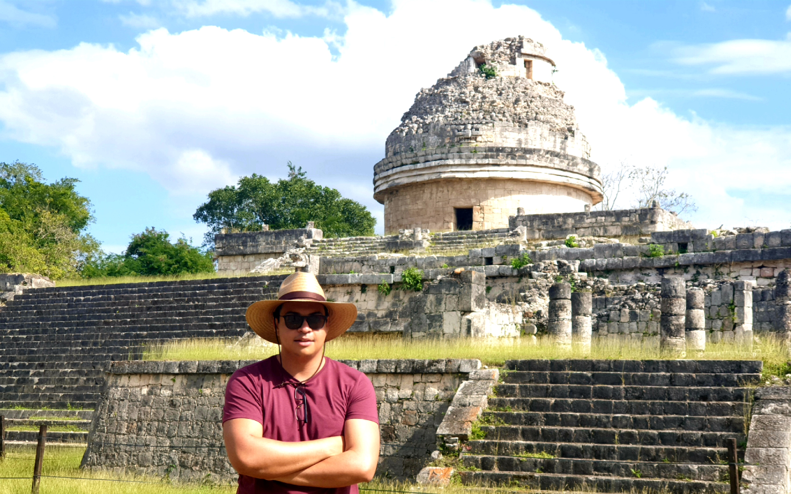
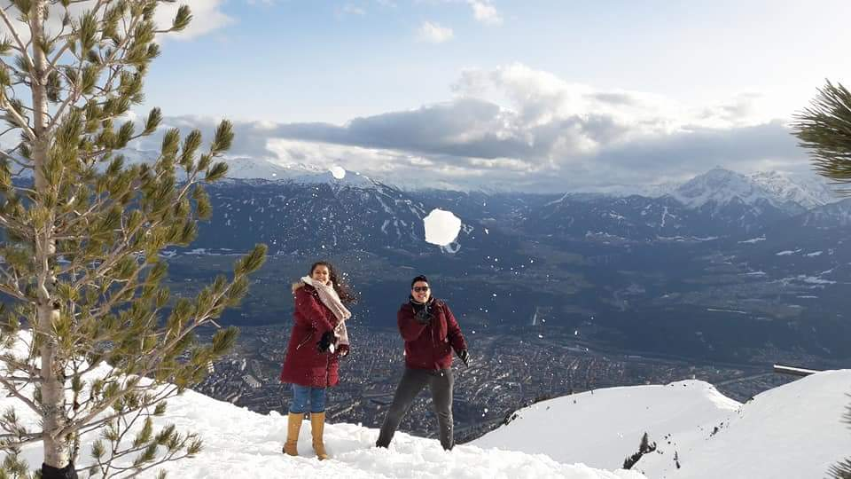
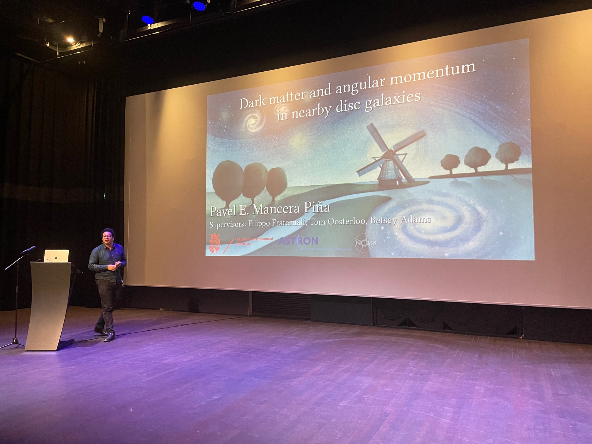
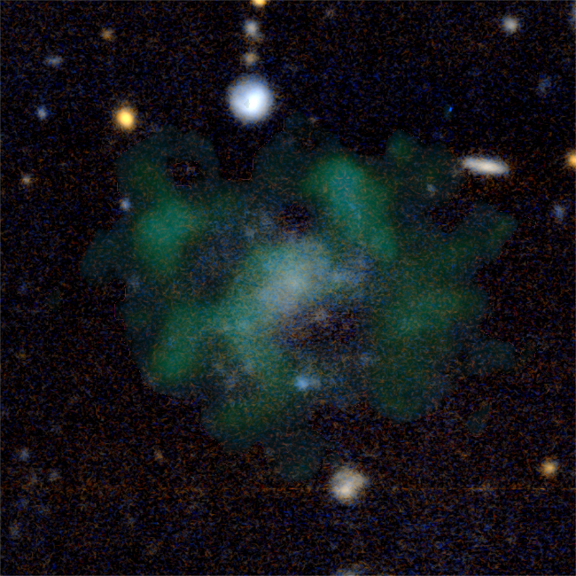

About Me

Hi, I am Pavel. Welcome to my website! I am an astrophysicist interested in galaxy formation and evolution. I am a NWO-Veni Fellow at Leiden Observatory studying the dynamics of galaxies through cosmic time.
Academic Journey
Postdoctoral Positions
2023-present: NWO Veni Fellowship at Leiden Observatory
2022-2023: Postdoctoral position at Leiden Observatory with Mariska Kriek
Education
2018-2022: PhD (cum laude) in Astrophysics, University of Groningen
Thesis: "Dark matter and angular momentum in nearby disc galaxies"
Advisors: Filippo Fraternali, Tom Oosterloo, Betsey Adams
2016-2018: MSc in Astronomy, University of Groningen
Thesis: "The evolution of ultra-diffuse galaxies in nearby galaxy clusters"
Advisor: Reynier Peletier
2011-2016: BSc in Physics, Universidad Veracruzana
Thesis: "The globular cluster NGC 6229 as seen from its variable stars"
Advisor: Armando Arellano Ferro
Research Interests
I have very broad interests in galaxy formation and evolution. My expertise is in the kinematics and dynamics of galaxies (especially discs), but in general I am very interested in the processes regulating the baryon cycle of galaxies and the connection between the observed properties of galaxies and the theoretical expectations for their host dark matter haloes. For more details, visit my Research section.
Publications
Personal
A few more personal things about myself in case you were curious...
I am from Mexico, and from the moment I was born and until I was six or so, I was one of the
~ 18000000 inhabitants of the marvellous, wonderful, and chaotic Mexico City. After that, I grew up in
a beautiful city called
Xalapa,
where I did a BSc in Physics, although I returned to Mexico City to work on my BSc thesis at the Institute of Astronomy of
the National University of Mexico.
After that, I came to the Netherlands (lovely weather, amazing good, why not) to pursue an MSc degree in Astronomy at the University of
Groningen. I liked Groningen so much (er gaat niets boven Groningen!) that I stayed four more years for my PhD, which I obtained with
cum laude distinction in the summer of 2022. As of September 2022, I moved to Leiden to hold a
postdoctoral position at Leiden Observatory.
I love science but also enjoy many other things. What I love doing the most is reading (Paul Auster is my favourite writer,
The Tin Drum (G. Grass) arguably my favourite book, but you know one cannot just say what is their favourite book without feeling remorse for the others),
and I also like a lot classical music (nothing like Tchaikovsky's violin concert), playing boardgames with friends (and ideally, but
not necessarily, remaining friends afterwards), going to the cinema (even better if it's a Hugh Grant movie), as well as playing squash and basketball
(go Spurs go!). Good food and nice wines (especially Italian wines, like a good Sangiovese) are also a must in my life.
Research

My field of research is galaxy evolution. I am fascinated by the complexity and yet universality of the laws of physics
that shape galaxies, and I am committed to the challenging task of understanding them. In particular, I am interested
in how are the fundamental parameters of galaxies connected to each other, what are the main physical mechanisms
regulating galaxy evolution, and how is the link between the baryonic component of galaxies and their host dark matter haloes.
My work is mostly observational (tho always try to compare with simulations!), and I use some of the most advanced
facilities, namely optical and radio telescopes, often located in wonderful observatories. In the picture above, you can see
one of my favorite observatories, El Caracol,
in the Mayan city of Chichén-Itzá. The observatory is not used anymore, but
I am very proud to come from a country (Mexico) with such a rich astronomical heritage. Below, you can find some brief information
in some of the research subjects I have been involved in lately.
Ultra-diffuse galaxies
Ultra-diffuse galaxies (UDGs) have the stellar mass of dwarf galaxies but light distributions
similar to big spirals like the Milky Way, which makes them very diffuse. Their formation mechanisms (how do you form such an
extended light distribution with so little stellar mass) have been widely discussed in the literature over the last years, but no consensus
has been reached. I have tackled the question from an observational perspective, looking both at the photometrical
properties of UDGs in nearby galaxy clusters, and especially at the gas dynamics of isolated UDGs.
One of the main findings of my research is that gas-rich UDGs (see left panel in the figure above) deviate from the baryonic
Tully-Fisher relation (see right panel), being this the first known galaxy population to do so. The position in the relation suggests that
the galaxies have baryon fractions approaching the cosmological limit. Our kinematic observations have also unveiled that gas-rich UDGs seem
to have dark matter haloes with inner densities much lower than expected in CDM.
Read the Paper
Angular momentum in disc galaxies
From very early models of galaxy formation it became clear that
together with the mass, angular momentum is a fundamental parameter regulating galaxy evolution. For example, the existence of the
Fall relation (see image above) clearly shows the tight link between mass (M), specific angular momentum (j), and morphology.
Together with my collaborators, I have been studying the angular momentum in nearby disc galaxies, obtaining some of the
most detailed measurements of their stellar, gas, and baryonic specific angular momentum. As shown above, we have characterised
the j-M relations across a wide range of mass, with the largest high-quality sample available in the literature. Moreover, we have
discovered one of the tightest known scaling relations for disc galaxies, connecting their baryonic mass, baryonic specific angular
momentum, and the gas fraction of galaxies. This is quite remarkable, given the large number of processes that can affect the angular
momentum reservoir of galaxies, such as feedback, different gas accretion histories, mergers, or dynamical friction, and yet it all results
in a very tight scaling relation. Our observations provide clear observational tests for models and simulations aiming to reproduce
realistic galaxies.
Read the Paper
The scaleheights of gas discs
While the gas discs of late-type galaxies are often assumed to be thin, observations in edge-on
galaxies show that the discs are actually thick, with a scaleheight that increases as a function of radius, i.e. the discs are flared.
This flaring is a direct consequence of the balance between gas pressure and gravity (see sketch above), and we can use the equations of vertical hydrostatic
equilibrium to estimate the flaring in any galaxy.
During my research, I have designed a method to estimate the flaring of nearby disc galaxies (based on the equations of vertical
hydrostatic equilibrium) while simultaneously deriving their mass model based on rotation curve decomposition. This has allowed me to
obtain some of the most detailed scale heights and mass models of massive and dwarf late-type galaxies. These mass
models are also an excellent tool to test different models of galaxy evolution, as they provide clear constraints on the parameters
of the dark matter haloes of our galaxy sample.
Read the Paper
Downloads

Throwing some data at you... In this section, you can find some interesting data associated with my published papers.
If I used some data you are interested in that are not here, please get in touch and I will be
happy to share them!
| Resource |
Description |
Download |
| PhD Thesis |
"Dark matter and angular momentum in nearby disc galaxies" |
PDF |
| Angular Momentum Catalog |
j-M relations for nearby disc galaxies |
Data |
| Gas Scale Heights |
Mass models and scale heights for 32 galaxies |
Zip |
| Dwarf Galaxy Kinematics |
Rotation curves for 21 dwarf galaxies |
Zip |
| UDG Cluster Catalog |
500 UDGs in nearby clusters (KIWICS) |
Zip |
News & Press

Some results from my research have been picked up by popular media as press releases. Here you can find some of them. You can also find some news about me or my research.
NWO Veni Fellowship Award
Recently, I have been awarded a VENI Fellowship by the Dutch Research Council (NWO). This fellowship funds my independent research programme aimed at measuring the dynamics of galaxies through cosmic time using the most advanced observational facilities to obtain an unprecedented view into the role of the mysterious dark matter in shaping galaxies.
Read More

Van Swinderen Prize 2022
I won the 2022 Van Swinderen Prize! Thanks to the Koninklijk Natuurkundig Genootschap:)
More Info
Dark Matter-Deficient Galaxies
An ultra-diffuse galaxy challenging the cold dark matter model? Articles from:
There are many more results from different media if you look for the galaxy AGC 114905, including press notes in Spanish, Italian, French, Portuguese, Chinese, German, among many others.

Six Galaxies with Little Dark Matter
Six galaxies discovered to have little dark matter, read it in:
Contact